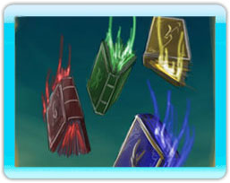

7 |
Il Ritorno dei Draghi |
 |
Il Ritorno dei Draghi Tre secoli passarono prima che le vecchie alleanze venissero infrante e la guerra dividesse il mondo degli uomini. Impauriti, disperati gli Arkhoniani usarono il Tomo dell' Artiglio nel tentativo di controllare i draghi e scatenarli contro i Daeroviani! Il loro piano fallì.Non solo la razza intera dei draghi fu liberata, ma anche i loro creatori: i potentissimi quattro Signori Draghi! Dai quali tutte le magie sono state generate: il potente Signore Drago della Terra, il selvaggio Signore Drago della Tempesta, l'eterno Signore Drago dell'Acqua e il feroce Signore Drago del Fuoco furono lasciati liberi nel mondo degli uomini.
La Maledizione degli Esseri Umani Forzando un drago a combattere contro un altro drago, l'uomo ha rotto l'ordine naturale del mondo di Nakiha. La stupidità degli uomini ha fatto sì che un nuovo Signore Drago nascesse, il Signore Drago della Distruzione! Prima che un campione possa diventare il Signore dei Draghi, deve riuscire a battere questo terribile Drago della Distruzione!
Le Guerre dei Draghi |

 |
 |
 |